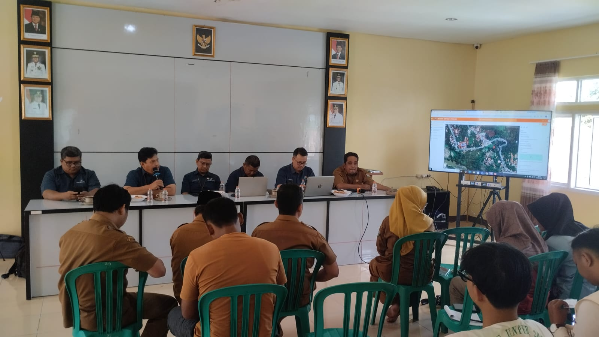
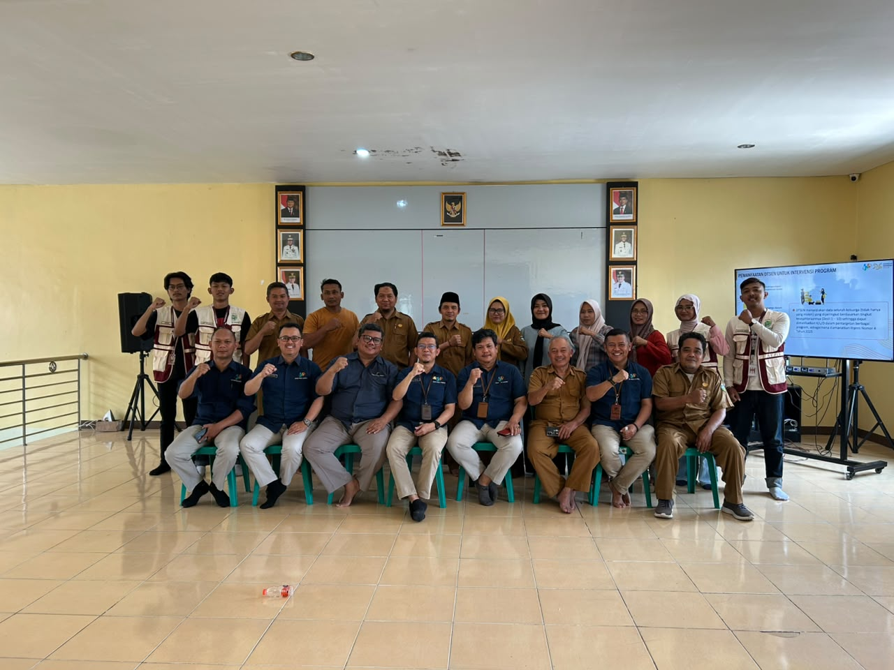

Koleksi Buku Publikasi Resmi
Gunakan filter kategori di bawah untuk menemukan dokumen yang Anda butuhkan.
Buku Panduan Potensi Pertanian & UMKM Papayan
Penyusun: Pemerintah Desa & Poktan
Buku panduan praktis sentra budidaya pertanian, produk olahan pangan lokal, dan direktori UMKM binaan Desa Papayan.

Buku Profil Desa Papayan 2026
Penyusun: Tim Penyusun Profil Desa
Buku dokumentasi komprehensif mengenai gambaran umum wilayah, kependudukan, kelembagaan, dan potensi Desa Papayan, Kecamatan Jatiwaras, Kabupaten Tasikmalaya.
Laporan Akuntabilitas & Realisasi APBDes 2026
Penyusun: Kaur Keuangan & Sekretariat Desa
Laporan pertanggungjawaban realisasi penerimaan Dana Desa (APBN), Alokasi Dana Desa (ADD Kab. Tasikmalaya), dan PADes untuk pembangunan infrastruktur desa serta ketahanan pangan.

Desa Papayan Dalam Angka 2026
Penyusun: Pemerintah Desa Papayan
Publikasi statistik resmi tahunan yang memuat data sektoral kependudukan, pertanian, perkebunan rakyat, sarana pendidikan, dan peta perekonomian Desa Papayan.